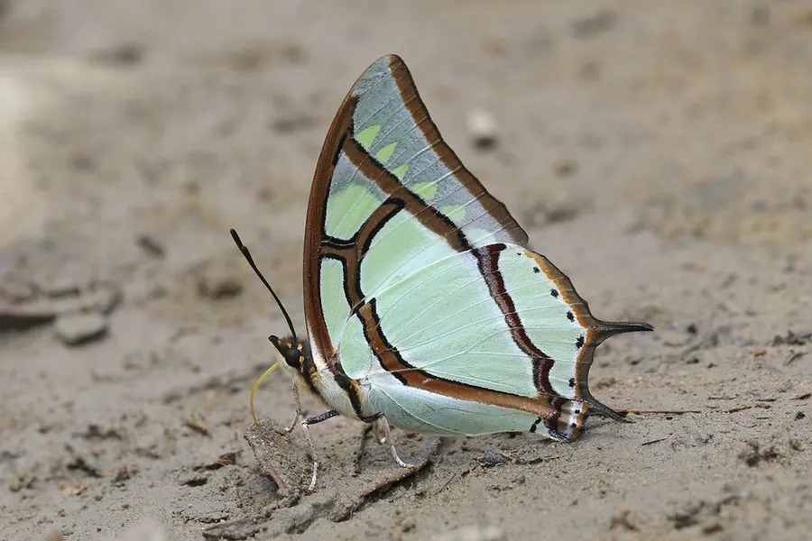

昆虫 · 动物界
二尾蛱蝶 Polyura narcaea

后翅有两条细长尾突的蛱蝶，翅面淡绿带黑边，飞行迅速，是中国南方林区常见的蝴蝶，幼虫取食多种阔叶树。
- 分类
- 门节肢动物门纲昆虫纲目鳞翅目科蛱蝶科属尾蛱蝶属
- 栖息环境
- 林缘、沟谷、山地阔叶林与溪边湿地
- 地理分布
- 中国南方、印度北部和东南亚地区
- 保护级别
- 暂无评估
物种志
二尾蛱蝶翅展约 6–7 cm，翅面淡绿色，前翅外缘和后翅边缘有粗黑带，后翅有两条细长的尾突，二尾之名由此而来；翅反面颜色更淡，布满细纹。身体浅色，触角黑色，足上多刺，成虫寿命通常只有数周到一两个月。
成虫飞行快速有力，喜欢停在树干上吸食树液和腐果，也常到湿地吸水。雌蝶把卵产在豆科、榆科等阔叶树的叶片上，幼虫绿色，头部有四根角状突起，化蛹后挂在枝叶间。二尾蛱蝶分布在中国南方、印度北部和东南亚，常见于林缘和沟谷。它的幼虫寄主包括多种树木，因此在植被丰富的山地更容易见到，是南方林区常见的观赏蝴蝶之一，也常出现在生态摄影作品中。
形态与习性
- 食性幼虫取食豆科、榆科等多种阔叶树叶片
- 翅展约 6–7 cm
- 特征后翅有两条细长尾突，翅面淡绿带黑边
- 生活史一年发生多代，幼虫化蛹挂在枝叶间
- 习性成虫飞行迅速，喜吸树液和湿地水分
- 分布中国南方等亚洲热带亚热带林区
趣味知识
- 二尾蛱蝶的名字来自后翅上两条细长的尾突。
- 它常停在树干上吸食树液，也喜欢到湿地吸水补充矿物质。
- 二尾蛱蝶飞行速度很快，在林中不易追拍。